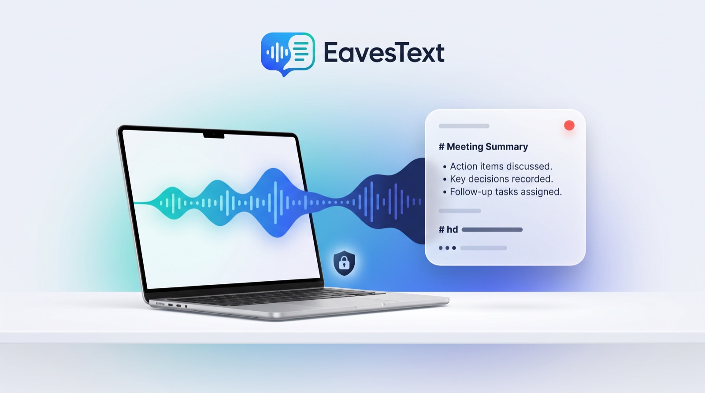
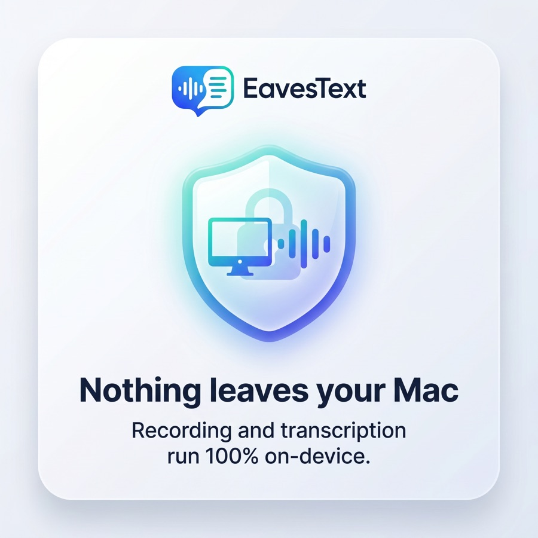
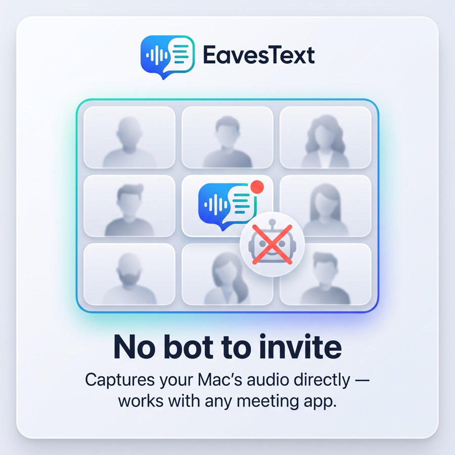
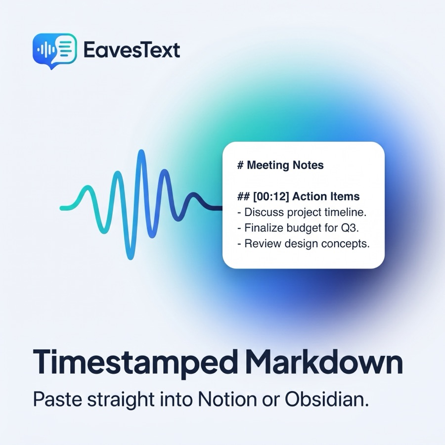
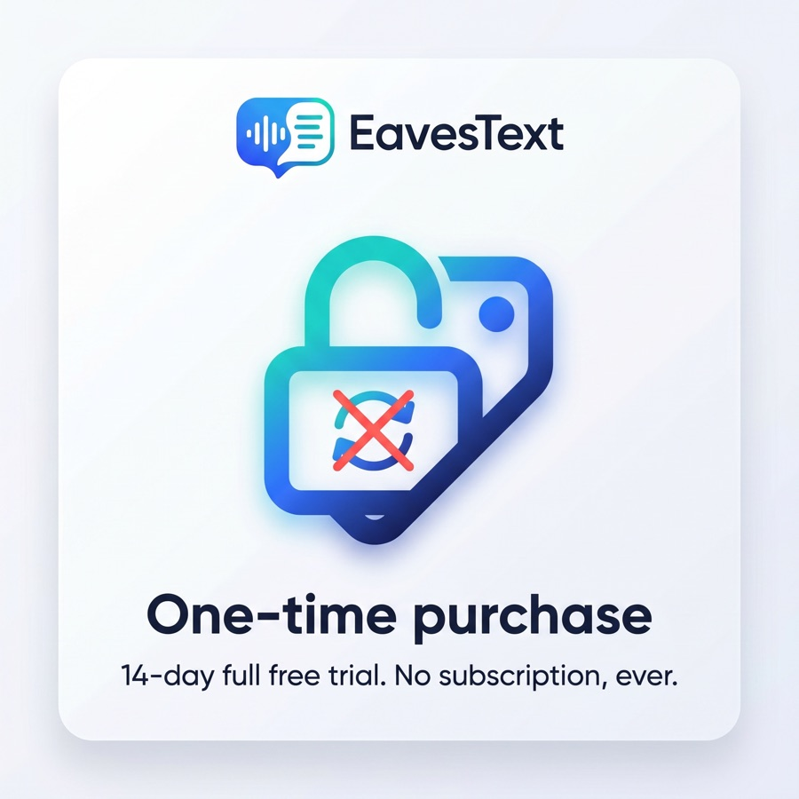
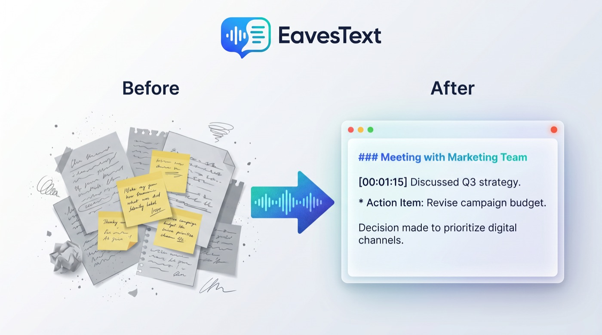
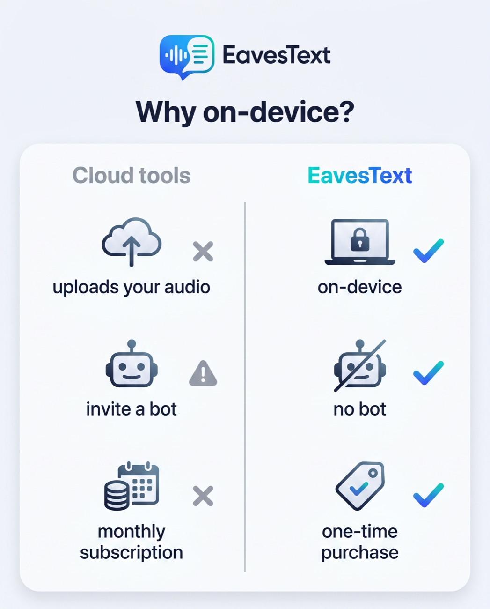

会議の音声が、
その場で議事録に。
Mac で鳴っている音とあなたの声を録音し、AI が完全ローカルで文字起こし。 クラウド送信なし、bot の招待も不要。Zoom・Meet・Teams など会議アプリを選びません。
App Store にて近日公開
特長を見る
macOS 26 以降 ／ Apple Silicon・Intel 対応 ／ 14 日間フル機能で無料体験

クラウドにも bot にも頼らない
会議の文字起こしに必要なものを、すべてあなたの Mac の中だけで。





録音して、
停止するだけ。
「録音を開始」を押して、会議が終わったら「停止」。それだけで、相手の声とあなたの声が タイムスタンプ付きの議事録になります。
- システム音声とマイクを同時録音（自分／相手が分かれる）
- 録音中から逐次文字起こし。長い会議でも停止直後に完成
- 過去の録音はキーワードで全文検索

なぜ
オンデバイスなのか
録音も文字起こしも、あなたの Mac の中だけで完結します。音声やテキストが外部サーバーへ 送られることはありません。社外秘の会議や個人的なメモにも安心して使えます。
- 音声をクラウドにアップロードしない
- 会議に bot を招待しない
- 月額課金ではなく買い切り
よくある質問
録音した音声はどこかに送信されますか？
いいえ。録音・文字起こし・保存はすべてあなたの Mac の中だけで行われます（macOS 内蔵のオンデバイス音声認識を使用）。音声やテキストがクラウドへ送信されることはありません。
会議アプリとの連携設定は必要ですか？
不要です。Mac 上で再生されている音声を直接キャプチャするため、どの会議アプリでもそのまま使えます。Bot の招待も要りません。
イヤホンで会議していても相手の声を録音できますか？
できます。スピーカーの音をマイクで拾う方式ではなく、音声データを直接取得するため、イヤホン使用時もクリアに録音されます。
必要な権限は何ですか？
マイクと「画面収録とシステム音声の録音」の許可が必要です。いずれも録音を開始するときにのみ使用され、録音中はメニューバーに常にインジケータが表示されます。
長時間の会議でも使えますか？
使えます。録音は一定時間ごとに区切って逐次文字起こしされるため、数時間の会議でも停止後すぐに議事録が完成します。
料金は？対応環境は？
本体は無料で、初回入手から 14 日間はフル機能をお試しいただけます。その後は買い切り（サブスクではありません）で全機能を解放できます。動作環境は macOS 26 以降（Apple Silicon / Intel 両対応）です。
会議の議事録を、もう手で書かない。
14 日間フル機能で無料体験。クラウド送信なし・bot 不要・買い切り。
App Store にて近日公開macOS 26 以降 ／ Apple Silicon・Intel 対応
お問い合わせ
不具合報告・ご要望・その他のお問い合わせは kotsutsumi@gmail.com までお願いします。
プライバシー
プライバシーポリシー / Privacy Policy をご確認ください。EavesText はデータを収集しません。